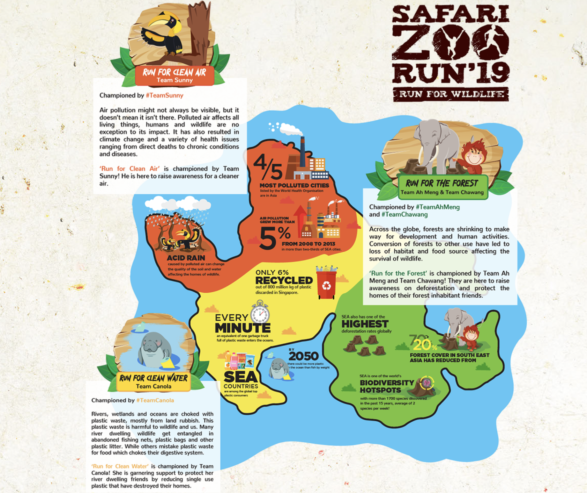

Run For Wildlife
Representing the run will be the 4 part icons:
- Ah Meng the Orangutan for Singapore Zoo
- Chawang the Elephant for Night Safari
- Canola the Manatee for River Safari
- Sunny the Hornbill for Jurong Bird Park
Each of the park icons will champion a conservation cause.
Runners will be able to choose which team they want to run for when they register!
